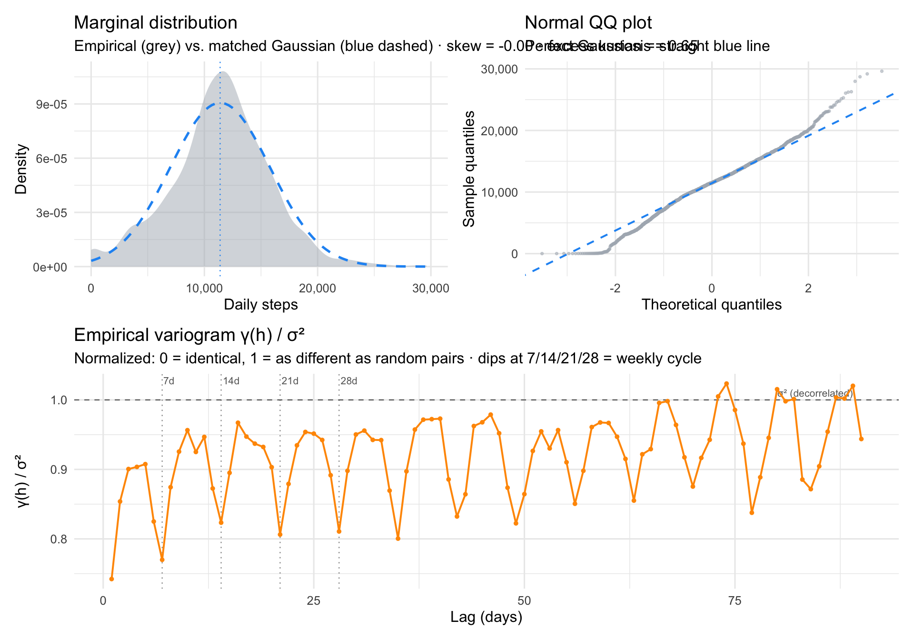

So I continue to explore the biometric data I’ve accumulated through the years with my Garmin. This time I turn to daily step counts — six years of them. Three questions drive this post: how does my step count change over time, is it affected by yearly and weekly rhythms the way my weight was, and — most importantly — can I detect abrupt changes in the series, and do those changes make any sense when I line them up with what was actually happening in my life? So let’s dig in.
The raw Garmin Connect export is a sprawl of JSON files (one UDSFile_*.json per day, nested in folders), which I parse separately into a tidy daily.csv — one row per day, step count and a few companion metrics I might want later. The parsing script isn’t part of this post; what matters here is the clean daily series.
One note before we touch the data. There are two kinds of problematic days: days missing from the JSON entirely (I wasn’t wearing the watch and Garmin has nothing to say), and days with zero steps recorded (the watch exists in the dataset but registered nothing — effectively 24 hours on a charger). I treat both as missing. A zero-step day isn’t a behavioral signal; it’s a sensor-absence signal, and lumping it in with real low-activity days would drag everything downward and confuse the changepoint detectors later.
Show code
# Load pre-processed daily step series — generated locally from the raw# Garmin JSON dump (not committed to repo)steps_raw <-read_csv("daily.csv", show_col_types =FALSE) |>mutate(weekday_num =as.numeric(wday(date, week_start =1)),doy =yday(date),t =as.numeric(date -min(date)) )# Full daily grid — lets us see (and classify) what's missingaudit <-tibble(date =seq(min(steps_raw$date),max(steps_raw$date), by ="1 day")) |> dplyr::left_join(steps_raw |> dplyr::select(date, totalSteps), by ="date") |>mutate(missing_type =case_when(is.na(totalSteps) ~"missing JSON", totalSteps ==0~"zero-coded",TRUE~"observed" ),# Promote zero-step days to NA for all downstream analysistotalSteps =if_else(totalSteps ==0, NA_real_, totalSteps) )# Modeling-ready observed setsteps <- audit |> dplyr::filter(!is.na(totalSteps)) |>mutate(t =as.numeric(date -min(date)))n_days <-nrow(audit)n_obs <-nrow(steps)n_missing <- n_days - n_obs
A few things jump out. There’s obvious daily noise — expected with behavioural data. There are stretches where activity visibly sits higher or lower for months at a time, which is the whole reason this post exists. And the missingness isn’t uniform: some years are clean, others have clear gaps where I abandoned the watch for a bit. Real life, basically. However, only 4.4% days dont have step data. not too bad I would say.
A closer look — marginal and memory
Before proceeding with further analysis lets have a closer look at the data.First: what does the marginal distribution of daily steps actually look like? Second: is there memory or hidden periods in the series?
Show code
# Marginal moments (hand-rolled so we don't pull in an extra package)mu <-mean(audit$totalSteps, na.rm =TRUE)sig <-sd(audit$totalSteps, na.rm =TRUE)skew <-mean((audit$totalSteps - mu)^3, na.rm =TRUE) / sig^3ekurt <-mean((audit$totalSteps - mu)^4, na.rm =TRUE) / sig^4-3# Empirical variogram on the full calendar-aligned series# γ(h) = 0.5 × mean squared difference at lag h# Uses audit (not steps) so "lag" means calendar days, not observation index.# NA pairs are simply skipped — no imputation, no gap-filling.compute_variogram <-function(x, max_lag =90) { n <-length(x) gamma <-numeric(max_lag) n_pairs <-integer(max_lag)for (h in1:max_lag) { d <- x[1:(n - h)] - x[(1+ h):n] ok <-!is.na(d) n_pairs[h] <-sum(ok) gamma[h] <-0.5*mean(d[ok]^2) }tibble(lag =1:max_lag, gamma = gamma, n_pairs = n_pairs)}vg <-compute_variogram(audit$totalSteps, max_lag =90)sample_var <-var(audit$totalSteps, na.rm =TRUE)vg <- vg |>mutate(gamma_norm = gamma / sample_var)
Show code
# Marginal density vs. matched Gaussianp_density <-ggplot(audit, aes(totalSteps)) +geom_density(fill = COL_RAW, alpha =0.5, colour =NA) +stat_function(fun = dnorm, args =list(mean = mu, sd = sig),colour = COL_FIT, linewidth =0.9, linetype =2) +geom_vline(xintercept = mu,colour = COL_FIT, linetype =3, linewidth =0.4) +coord_cartesian(xlim =c(0, 30000)) +scale_x_continuous(labels = comma) +labs(title ="Marginal distribution",subtitle =sprintf("Empirical (grey) vs. matched Gaussian (blue dashed) · skew = %.2f · excess kurtosis = %.2f", skew, ekurt),x ="Daily steps", y ="Density")# Normal QQ plot — same story from the tail-extremes anglep_qq <-ggplot(audit, aes(sample = totalSteps)) +stat_qq(colour = COL_RAW, size =0.6, alpha =0.5) +stat_qq_line(colour = COL_FIT, linewidth =0.7, linetype =2) +scale_y_continuous(labels = comma) +labs(title ="Normal QQ plot",subtitle ="Perfect Gaussian = straight blue line",x ="Theoretical quantiles", y ="Sample quantiles")# Variogram: how fast does γ(h) climb, does it plateau, where are the dips?p_vg <-ggplot(vg, aes(lag, gamma_norm)) +geom_vline(xintercept =c(7, 14, 21, 28),linetype =3, colour ="grey60", linewidth =0.4) +annotate("text", x =c(7, 14, 21, 28), y =Inf,label =c("7d","14d","21d","28d"),vjust =1.4, hjust =-0.1, size =2.8, colour ="grey40") +geom_hline(yintercept =1, linetype =2, colour ="grey40", linewidth =0.4) +annotate("text", x =89, y =1, label ="σ² (decorrelated)",vjust =-0.5, hjust =1, size =2.8, colour ="grey40") +geom_line(colour = COL_VG, linewidth =0.7) +geom_point(colour = COL_VG, size =1) +labs(title ="Empirical variogram γ(h) / σ²",subtitle ="Normalized: 0 = identical, 1 = as different as random pairs · dips at 7/14/21/28 = weekly cycle",x ="Lag (days)", y ="γ(h) / σ²")(p_density | p_qq) / p_vg +plot_layout(heights =c(1, 1))

On average I do hit 10k steps a day, however it is not truely Gaussian. The distribution is approximately Gaussian, but not quite. Skew is essentially zero, so there is no big asymmetry. What is off is the shape. The empirical density is leptokurtic: narrower and peakier than a matched Gaussian in the core, with slightly fatter tails at both ends. Mass has moved from the shoulders into the peak and into the extremes. The peakiness partly reflects self-regulation, since step goals and daily routines pull counts toward a typical value, and the floor at zero forces the left side into a stricter shape than a Gaussian allows. The fatter tails are the other side of the coin: very low days (sick, travel, off-wrist) and very high days (hikes, races) show up more often than a Gaussian would predict.
The series is mostly noise plus a clean weekly cycle. γ(h)/σ² sits around 0.75 already at lag 1, meaning only about 25% of total variance is shared between consecutive days. Most of what you see on any given day is effectively independent of the day before. What structure there is lives mostly in the weekly rhythm: clean dips in γ(h) at h = 7, 14, 21, 28, 35, where same-weekday pairs are systematically more similar than mixed ones. The dips keep going all the way out to 84 days, so the weekly cycle is phase-locked across the entire six-year record. Beyond the week, the variogram plateaus near σ², so there is little slow memory to speak of.
Smooth structure: trend, weekday, and season
So what did the initial inspection tell us? The marginal is leptokurtic with mildly fatter tails than a Gaussian, which means a Student-t likelihood would probably fit better than the default Gaussian one. Now yes, we know that modelling is about the conditional distribution of the response given the predictors, not the marginal, and those can look very different. But we go a bit crazy here and assume the marginal features will seep into the conditional, so we use family = scat() from mgcv(Wood 2017) — a scaled Student-t likelihood that handles heavy tails gracefully and downweights the outlier days (hikes, sick days) without us having to hand-tune anything.
On the memory side, there is a strong weekly cycle. And — wow, again, just like my weight post — we might also expect a yearly rhythm: more walking in summer, less in winter, or the opposite depending on where you live. The variogram did not show it directly because we only went out 90 days, but six years of data is enough to estimate a seasonal smooth over day-of-year. So we fit three smooths: a long-term trend s(t), a cyclic weekly smooth s(weekday), and a cyclic seasonal smooth s(doy).
The cyclic basis (bs = "cc") makes sure Sunday wraps back to Monday, and December 31 wraps back to January 1. Without it, the endpoints of each smooth would be artificially pulled toward zero and the cycle would look broken at the boundary.
The model explains about 14% of variance. That might sound low, but it is right in line with the budget the variogram set: about 75% of variance is day-to-day noise that no smooth model can touch. What the smooths can do is capture the structure that is there, and all three terms are clearly pulling their weight. The weekday smooth is the strongest signal by a wide margin, which matches what the variogram dips already told us. The trend smooth is almost fully using its flexibility, meaning activity really does wiggle across the six years. The seasonal smooth is real but simple — a single gentle curve over the year, no multi-peak drama. The scaled Student-t likelihood seems to be dealing well with the heavy tails: the QQ plot tracks the reference line cleanly across the bulk of the range, and scat() ended up estimating about 5 degrees of freedom — markedly heavier-tailed than a Gaussian, which is consistent with what the marginal distribution hinted at. Residuals vs linear predictor look roughly flat with stable variance, histogram is symmetric around zero — nothing alarming, nothing to fix.
The long-term trend opens high in late 2019 at around 15 to 16k steps, slides down through 2020, and settles into a flatter regime around 11k steps for the rest of the series. The GAM paints this as a smooth slide, but a slide is just one possibility. The actual drop could have been far more abrupt than the spline is willing to show.
The weekday effect runs the opposite way from the stereotype: weekdays (Mon to Fri) are higher, weekends are the trough, with Saturday and Sunday sitting roughly 2,000 to 3,000 steps below midweek. This is the structure the variogram’s h=7 dips were pointing at.
The seasonal effect is small but real. A gentle summer peak, winter dip, consistent with living somewhere like San Diego where the weather does not dictate outdoor activity as strongly as further north. A few hundred steps of amplitude over the year.
So the smooth model has done its job. The weekly rhythm is cleanly isolated, the seasonal cycle is captured, and the trend shows activity settling from a high 2019 baseline to a lower plateau. But GAMs are all about the smooth, which is great, until it is not. Look at that dip at the beginning of 2020. The trend smooth glided right over it, leaving a gentle curve where there might have been a cliff. Could something be done?
Detecting abrupt change
Changepoint detection is designed for exactly this. Instead of a continuous curve, it asks: at which moments did the mean of the series jump to a new level? The output is a set of dates, not a smooth function, and that is the point. If the early-2020 dip was a cliff rather than a slide, a changepoint method should tell us where the cliff is.
Before running anything, two practical problems. The 107 missing days need to be handled, because none of the methods below take NAs in stride. We use Kalman imputation via imputeTS::na_kalman(Steffen Moritz and Thomas Bartz-Beielstein 2017). The bigger problem is the weekly cycle, which the GAM just showed us is by far the largest periodic component in the data. None of the changepoint methods below model periodicity natively, which means a clean weekly dip looks to them like a structural break every seven days. The standard fix is weekly aggregation: take the mean of each calendar week and the weekly cycle disappears by construction. Every week contains exactly one of each weekday, so high midweek days and low weekend days balance in the mean. The 2,428-day series collapses to around 315 weekly points, which is a manageable size for all three methods and keeps far more temporal resolution than going all the way to monthly would.
Show code
# Kalman imputation for NA-handlingsteps_imp <- audit |>mutate(totalSteps_imp =as.numeric(na_kalman(totalSteps, model ="StructTS", smooth =TRUE) ) )# Weekly aggregation. ISO week (Monday start) so each bucket covers# exactly one of each weekday and the weekly cycle is cancelled.weekly <- steps_imp |>mutate(week =floor_date(date, "week", week_start =1)) |>group_by(week) |>summarise(mean_steps =mean(totalSteps_imp),n_days =n(),.groups ="drop") |>filter(n_days ==7) # drop partial head/tail weeks
Attempt 1: PELT
PELT, short for Pruned Exact Linear Time (Killick and Eckley 2014), is the workhorse of frequentist changepoint detection. It minimises squared deviations from segment means plus a BIC penalty on the number of changepoints. Fast, exact under its assumptions, easy to call.
PELT found 344 changepoints in 315 weekly observations. Essentially one changepoint per week. This is still the same failure mode as before, even with the weekly cycle neutralised: week-to-week noise in the aggregated series is large enough that BIC keeps finding it cheaper to open a new segment than to tolerate the variance as residual. PELT with default settings simply is not robust for this kind of noisy behavioural signal. A more restrictive penalty would help, but at that point the method’s usefulness becomes “whatever you tune it to,” and we can do better.
Attempt 2: strucchange
breakpoints() from strucchange(Zeileis et al. 2002, 2003) uses Bai-Perron dynamic programming to find the optimal breakpoint locations given a target number of breaks, then selects the number of breakpoints by BIC. Crucially, it also returns 95% confidence intervals for each changepoint location, the first method in this sequence that admits it is uncertain about where a break actually is.
strucchange returned 3 changepoints: one in early 2020, one around the start of 2022, and one in late 2022. Four regimes: a high-activity baseline of about 13k daily steps through late 2019 and into early 2020, a drop to around 11k through 2021, a brief bounce back to ~13k in early-to-mid 2022, and then a settled lower regime of around 10.5k from late 2022 onward.
The confidence bands matter as much as the point estimates. The early-2020 break has a wide band stretching roughly from February to June — strucchange is confident that something shifted in that window, but cannot pin it to a specific week. The early-2022 break is similarly wide. The late-2022 break, by contrast, is sharp: a narrow band centred on a single point, which means the drop happened abruptly enough that the data strongly prefers one specific week for it.
But there is still a commitment baked in. strucchange picks one number of breakpoints, the one BIC likes best, and hands you that configuration. It does not tell you whether a model with one more or one fewer break was nearly as good, or which of its three breaks is best supported by the data. For that, we need something Bayesian.
Attempt 3: BEAST
BEAST, the Bayesian Estimator of Abrupt change, Seasonality, and Trend (Zhao et al. 2019), takes the Bayesian route. Instead of picking a single best number of changepoints, it samples across configurations and returns the posterior probability of a changepoint at each time point. The number of changepoints itself is a random variable with a distribution.
The native BEAST plot shows, from top to bottom: the observed weekly means with the posterior mean trend overlaid in green and trend changepoints marked as dashed lines, the posterior probability of a trend changepoint at each week Pr(tcp), the trend order (how many segments BEAST is averaging over), the slope sign of the trend (positive in red, negative in blue), and the residuals. The posterior mode for the number of trend changepoints is 10.
The real payoff is the Pr(tcp) panel. Instead of a yes/no answer at each date, you see how much the data supports a changepoint there. The tallest spike sits around June 2020 with probability close to 0.85, with another strong one in March 2020 around 0.7. A third confident break shows up in late 2022. These three are the ones BEAST insists on. Smaller spikes, around late 2019, mid-2021, early 2022, and another faint one at the very end of the series, show places where the data hints at a shift but does not strongly commit. The long flat stretch from 2023 through most of 2025 is informative in its own right: BEAST finds essentially no evidence for regime change across those three years.
The trend panel itself tells a richer story than strucchange’s three flat segments. Activity opens high through late 2019, then takes a sharp dip in early 2020 down to around 8k, followed by a bounce back up to ~14k in mid-2020, before settling into a lower plateau around 11k that holds through 2022 with only minor wobbles. Late 2022 brings another step down to ~10k, which then remains essentially flat for the rest of the series. The early-2020 trough-and-bounce is the kind of feature a piecewise-constant method like strucchange cannot easily represent and tends to collapse into a single step, which is exactly what we saw in the previous panel where strucchange placed one break somewhere in that window and drew a flat segment across it.
A few parameter notes. season = "none" because weekly aggregation already stripped the weekly cycle. tcp.minmax = c(0, 10) caps the prior at at most 10 trend changepoints. tseg.min = 12 is the main regularizer: it tells BEAST that regimes must last at least 12 weeks (roughly three months), which suppresses tiny spurious breaks while leaving room for any genuine regime shift. deltat = 7 / 365.25 sets the time axis to weeks-expressed-as-years for a clean calendar x-axis. One last note: BEAST is fed the same Kalman-imputed series the other two methods used, purely for consistency. Unlike PELT and strucchange, BEAST can actually handle NAs natively by integrating over them in the MCMC, so the imputation was a courtesy rather than a requirement. On a series with this little missingness (~4%) the distinction does not matter, but for heavier gaps it would.
What did the methods actually find?
We ran three changepoint methods and fit a GAM, all without ever telling any of them about the wider world. The data knew that something shifted in early 2020, mid-2020, and late 2022. Now we can put the external context back in and see whether the data-driven breaks correspond to anything real.
The external context for 2020 is easy to pin down. San Diego County issued its first Stay-at-Home order on March 19, 2020, lifted June 12, 2020. A second order came into effect on December 6, 2020, and lifted on January 25, 2021. The state-wide full reopening followed on June 15, 2021. None of these dates were fed to BEAST or the GAM.
The summary figure has three panels. The top shows BEAST’s regime decomposition directly on the raw daily data. The middle shows the same data as a 2D density with the GAM trend drawn through it, and the San Diego lockdown periods marked as a reference. The bottom shows the two cyclic smooths from the GAM, one for weekday and one for day-of-year.
Body keeps the score. BEAST and the GAM do a great job of reading it.
At the beginning of the series, the GAM captures a clear reduction in daily steps, and BEAST isolates it into three segments. The lowest of them, sitting around 8k steps in Panel A, overlaps almost perfectly with the SAH-1 window drawn on Panel B. No one told the method about lockdowns. The data did.
After SAH-1 lifts, BEAST catches the bounce: a segment back up to around 14k for a couple of months, which the GAM smooths right over. Life briefly opened up, walking resumed with interest, then settled again. BEAST shows it as a sharp peak. The GAM turns the whole episode into a gentle sag.
Neither method flags anything for SAH-2 in winter 2020. The second order is drawn on Panel B, but the data around it looks like the surrounding weeks. Maybe the shorter order and the colder season meant less change in daily behaviour, or maybe I had already adjusted. Either way, it is not a break the data insists on.
Then, after the full June 2021 reopening, the GAM trend rises again. Panel B shows the blue curve ticking upward through late 2021 and peaking in early 2022. BEAST agrees, placing a segment that jumps back up to around 13k for the 2022 period. Restrictions gone, activity up.
A step down follows in late 2022. Both methods agree on this one. The GAM trend slides toward a new plateau around 10k, and BEAST places a confident changepoint right at the transition. No public anchor I can point to, but the data is certain something changed. From there, three years of quiet: flat GAM trend, no BEAST changepoints, a stable regime all the way through 2025.
Then, at the very end of the series in 2026, activity starts to climb again. The GAM trend lifts, BEAST places one last tentative changepoint, and Panel A shows the final segment back around 11 to 12k. I walk more again.
The weekly and seasonal smooths in Panel C. Midweek days sit about a thousand steps above the Monday baseline, and weekends drop three thousand below, consistent with weekday-dominant activity patterns. The seasonal smooth shows a gentle summer bump of a few hundred steps, with the confidence band staying wide. Small compared to the regime shifts, but real.
This is the point of the whole exercise. Given no knowledge of public health timelines, personal events, or my calendar, a Bayesian changepoint detector recovered the rough shape of real historical disruption, and a GAM independently traced the smooth version of the same story. The match is not perfect. BEAST places breaks in weeks, while SAH orders have specific dates. But the alignment is there, and it is there because the signal is genuinely in the data. The body kept the score.
Killick, Rebecca, and Idris A. Eckley. 2014. “changepoint: An R Package for Changepoint Analysis.”Journal of Statistical Software 58 (3): 1–19. https://www.jstatsoft.org/article/view/v058i03.
Simpson, Gavin L. 2024. “gratia: An R Package for Exploring Generalized Additive Models.”Journal of Open Source Software 9 (104): 6962. https://doi.org/10.21105/joss.06962.
Steffen Moritz, and Thomas Bartz-Beielstein. 2017. “imputeTS: Time Series Missing Value Imputation in R.”The R Journal 9 (1): 207–18. https://doi.org/10.32614/RJ-2017-009.
Wickham, Hadley, Mara Averick, Jennifer Bryan, Winston Chang, Lucy D’Agostino McGowan, Romain François, Garrett Grolemund, et al. 2019. “Welcome to the tidyverse.”Journal of Open Source Software 4 (43): 1686. https://doi.org/10.21105/joss.01686.
Wood, S. N. 2017. Generalized Additive Models: An Introduction with R. 2nd ed. Chapman; Hall/CRC.
Zeileis, Achim, Christian Kleiber, Walter Krämer, and Kurt Hornik. 2003. “Testing and Dating of Structural Changes in Practice.”Computational Statistics & Data Analysis 44 (1–2): 109–23. https://doi.org/10.1016/S0167-9473(03)00030-6.
Zeileis, Achim, Friedrich Leisch, Kurt Hornik, and Christian Kleiber. 2002. “strucchange: An r Package for Testing for Structural Change in Linear Regression Models.”Journal of Statistical Software 7 (2): 1–38. https://doi.org/10.18637/jss.v007.i02.
Zhao, Kaiguang, Michael Wulder, Tongxi Hu, Ryan Bright, Qiusheng Wu, Haiming Qin, Yang Li, et al. 2019. “Detecting Change-Point, Trend, and Seasonality in Satellite Time Series Data to Track Abrupt Changes and Nonlinear Dynamics: A Bayesian Ensemble Algorithm.”Remote Sensing of Environment 232: 111181. https://doi.org/10.1016/j.rse.2019.04.034.